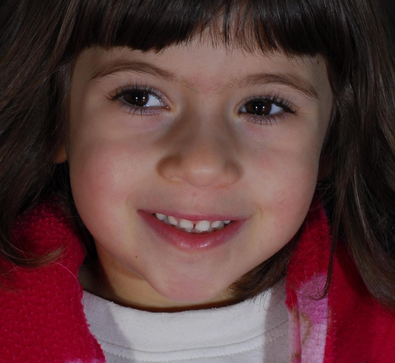

Source selection
Open complete comparison · Input records
Analysis coordinates belong to the selected raster. Original uploaded bytes remain in input_a.image and input_b.image. Previews use stored orientation, not EXIF display rotation. Selecting a crop does not establish anatomical accuracy.
A · two-faces.png
Original 1366 × 640 pixels. Selected columns [20, 673) and rows [20, 620): 653 × 600 pixels.
Original stored orientation · amber outline is the selected region.
 Actual analysis input · no resampling.
Actual analysis input · no resampling.
To recover original pixel centers, add (20, 20) to the selected-raster coordinates.
Original bytes: b62dbcbbdc12b34ee22a4a63e0c5d93fdf3007ce61486fad777ba7e56c14c189
Analysis RGB array: 05c35b9c164c5494d1f71e323d74d6069cd653483d482d2af0e2f13f331c78ec
B · single.png
Original 653 × 600 pixels. Selected columns [0, 653) and rows [0, 600): 653 × 600 pixels.
Original stored orientation · amber outline is the selected region.

Actual analysis input · no resampling.
To recover original pixel centers, add (0, 0) to the selected-raster coordinates.
Original bytes: aa7aedf6967788ab545a5e652d6ce8e14cf36e779d454d9d6fe67d6240df37d0
Analysis RGB array: 05c35b9c164c5494d1f71e323d74d6069cd653483d482d2af0e2f13f331c78ec